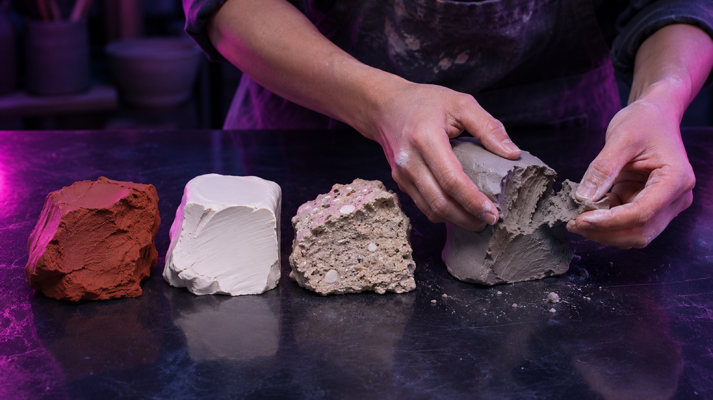
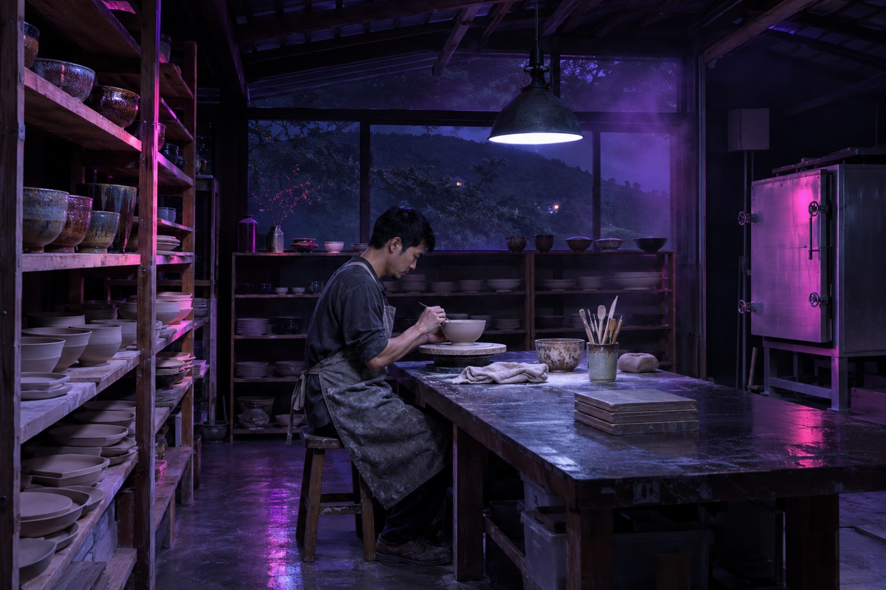
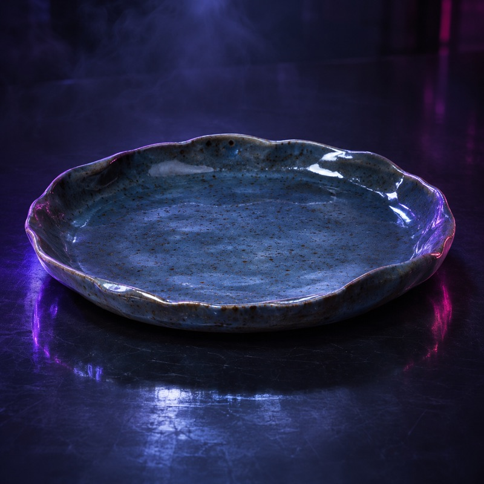

光是第 2 章揉土那段就值得了，之前自己亂揉做什麼都裂。

免費試看｜
陶藝
從零開始的手捏陶｜做出第一只日用食器
不用拉坏機、不用工作室，
四個小時後，你桌上會多一只自己做的碗
- 你會做出
- 一只直徑約 12cm、可進微波爐與洗碗機的手捏食器。
- 你會學會
-
- 分辨陶土種類，知道新手該從哪一種開始
- 揉土排氣：避免入窯爆裂的關鍵動作
- 手捏成形與修坯：把厚薄捏得均勻
- 上釉與送窯：如何找到附近可代燒的窯場
- 你需要準備
- 陶土 1kg、海綿、修坯刀、一張能弄髒的桌子（完整清單可下載）
課程章節
6 章 ‧ 28 單元 ‧ 共 4 小時 20 分
關於你的講師
林子謙
深坑窯場主理人
- 深坑「土日」工作室負責人
- 年度工藝設計獎入選
- 平台累積 1,845 位學生 ‧ 平均評價 4.9
做陶十二年，開過七年的實體體驗課，教過超過 3,000 位完全沒碰過土的學生。相信「第一只碗歪一點也沒關係，重點是你真的用它吃過一頓飯」。


學員怎麼說（312 則評價）
-
-
老師把失敗的也拍進去這點超加分，知道自己不是唯一做壞的人。
-
影片很好，但希望能多講一點代燒窯場要怎麼找。
購買前，你可能想知道
可以，這堂課就是為第一次碰土的人設計的。
永久觀看，課程日後更新的單元也會一併開放。
第 6 章會教你如何尋找並聯繫可代燒的窯場。
購買後 7 天內、觀看未超過課程 20%，可申請全額退費。
設計稿狀態示意
這一頁的其他狀態
已購買時
購買卡改成「繼續上課」並顯示學習進度光束；課程章節不再鎖定，已看完的單元打勾（第 1 章全部完成，與學習頁一致），其他單元可以直接播放。
未登入點擊購買時
按「立即購買，開始上課」會開啟登入對話框，標題下方多一行提示，主要按鈕改成「登入並開始上課」，送出後前往購買課程（上方購買卡可以實際點點看）。